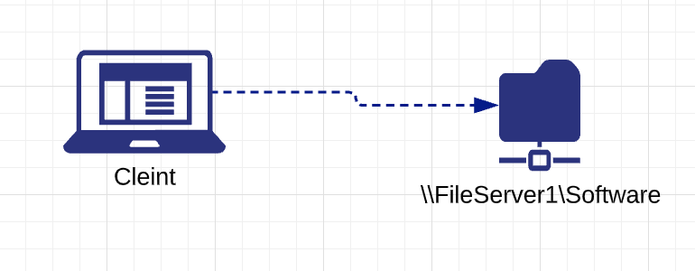
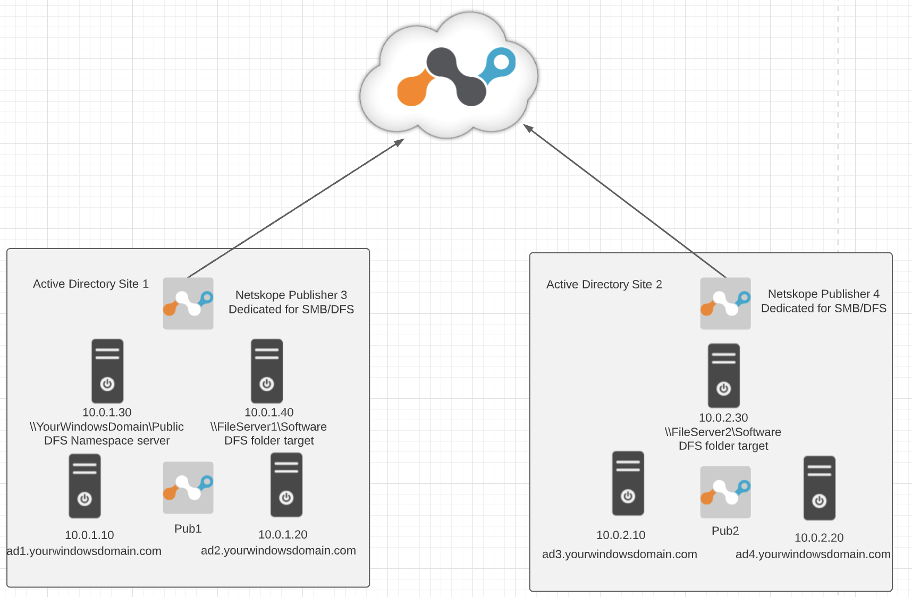
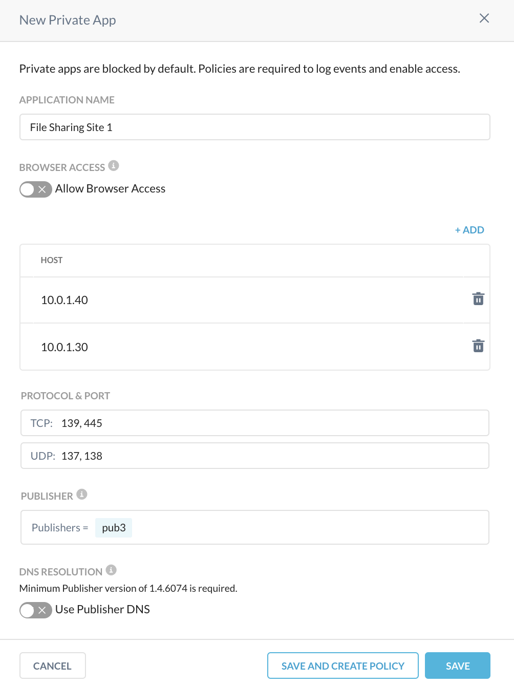
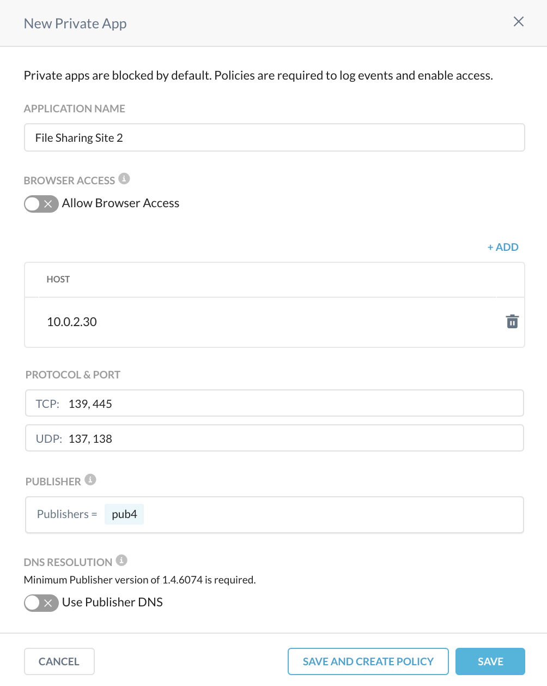

Netskope Private Access for SMB and DFS Services
This article explains how to configure Netskope Private Access (NPA) applications for file sharing protocols such as Server Message Block (SMB) and Distributed File System (DFS).
SMB is a communication protocol for providing shared access to files, network browsing, printing and inter-process communication over a network. There are a few well-known SMB protocol implementations like CIFS and Samba. SMB protocol relies on lower-level transport protocols like TCP and UDP. SMB works through a client-server approach, where the client makes specific requests and the server responds accordingly. Traditional file sharing resources can be accessed by SMB protocol in the form of \\FileServer1\Tools\ or \\FileServer2\Tools\ as an example.
|  |
DFS provides the ability to logically group distributed SMB file sharing resources and transparently link them into a hierarchical namespace. For example, instead of browsing through individual file sharing resources, the client accesses \\YourWindowsDomain\Public\Software and gets transparently redirected into either \\FileServer1\Software or \\FileServer2\Software, depending on its proximity and availability.
 |
Below is the description of different elements that make up a DFS namespace:
Namespace server: A namespace server hosts a namespace. The namespace server can be a member server or a domain controller.
Namespace root: The namespace root is the starting point of the namespace. In the above example, the name of the root is Public, and the namespace path is
\\YourWindowsDomain\Public. This type of namespace is a domain-based namespace because it begins with a domain name and its metadata is stored in Active Directory Domain Services (AD DS).Folder: Folders without folder targets add structure and hierarchy to the namespace, and folders with folder targets provide users with actual content. When users browse a folder that has folder targets in the namespace, the client computer receives a referral that transparently redirects the client computer to one of the folder targets.
Folder targets: The folder target is where data and content is stored. In the previous example, the folder named Tools has two folder targets -
\\FileServer1\Softwareand\\FileServer2\Software.
The vast majority of SMB implementations are tightly integrated with Windows Active Directory authentication services like Kerberos or NTLM. Kerbersos protocol is the primary authentication and authorization method for accessing file sharing resources. In order to access certain resources, the client retrieves a Kerbeos ticket from the Active Directory Domain Controller, which is acting as Key Distribution Center (KDC). This ticket is carried by the SMB protocol and presented to the destination file sharing service, which in turn validates it with KDC too. The NTLM protocol might be used as a fallback in case Kerberos is not supported by legacy or not domain-joined clients.
In case of distributed deployment when SMB file sharing resources and/or DFS namespace servers are configured on separate servers hosted in separate sites, you need to create separate configurations associated with different Publishers in order to achieve even traffic distribution.
|  |
Proper deployment for Active Directory Domain Services (which includes Kerberos) is documented in this article and it must be followed as a prerequisite if the domain-joined endpoints need to access DFS/SMB shares. Certain use cases with non-domain joined devices and/or legacy clients may rely on NTLM authentication. In this situation, connectivity to Active Directory domain controllers is not required, but the primary application to resolve internal domain resources with the Publisher DNS option from that article should still be created and assigned to the users in addition to the configuration below.
To create a Private Application, log in to the Netskope UI, go to Settings > Security Cloud Platform > App Definition > Private Apps, and then create a new private application named File Sharing Site 1 with these parameters:
Host (as per example in above diagram):
10.0.1.30
10.0.1.40
Allow Browser Access toggle is disabled
Protocol and Port:
TCP: 139, 445
UDP: 137, 138
Publisher: In this case, you will select pub1. because it is dedicated for file sharing services and best positioned to serve traffic to those resources. If you have more than one publisher deployed at that physical location, you can also add them to the list of publishers serving this application for redundancy purposes.
Use Publisher DNS toggle is disabled
|  |
Repeat the same steps to create another new private application named File Sharing Site 2, but use 10.0.2.30 as the IP addresses in the application definition, as shown below:
|  |
Ports used in the above configuration:
Port | Description |
TCP:139 | NetBIOS session service |
TCP:445 | SMB over TCP without NetBIOS |
UDP:137 | SMB over UDP (name services) |
UDP:138 | SMB over UDP (Datagram) |
Note
The above configuration is intended to provide backward compatibility to older versions of SMB protocol and clients (i.e. pre-Windows 2000). Modern SMB implementations require only TCP:445 to be configured in addition to Active Directory Domain Services connectivity mentioned above. We recommend that you evaluate connectivity requirements as it pertains to legacy SMB protocols and consider removing TCP:139, UDP: 137, UDP: 138 ports from your configuration to prevent network over-exposure:
After defining the above File Sharing applications, you can assign them to a desired users and/or groups in a Real-time Protection policy to provide ZTNA-based access to your SMB/DFS resources